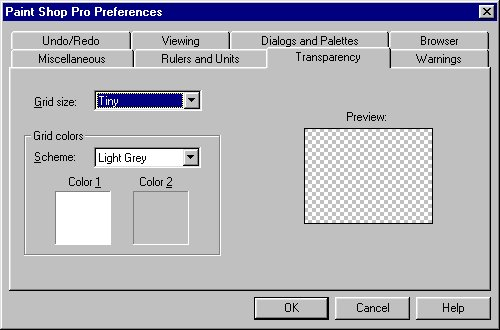
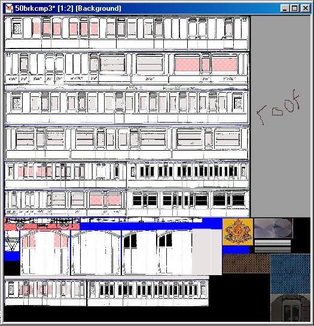
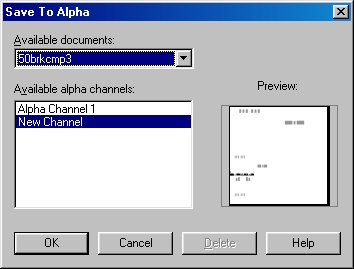
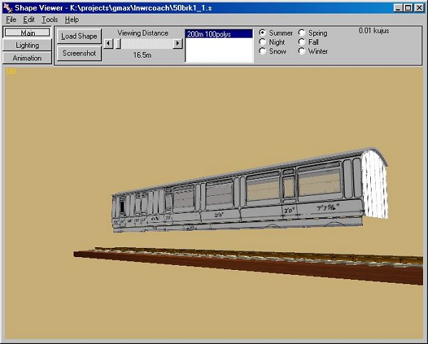

A Coach Made With GMax
by Richard Osborne
Chapter 6: Alpha Channels
OK, time to see through the windows! We need to create an alpha layer in PSP, other programs will be similar. I described alpha channels in chapter 6 of the loco tutorial - still the same. Open PSP & open the .tga texture file. Go to the top toolbar - "Masks", "New", "Show All".
Press "OK" then reopen the menu. You'll notice three things - everything on the dropdown is now black, the file has an asterisk which indicates that it's not saved & the word "Background" has changed to "Layer 1".
Go into "File" on the top toolbar, "Preferences", "General Program Preferencies", "Transparency" & change the grid size to "Tiny". It's slightly slower when blocking in but far easier to see - we're going to be working in single pixels in a moment. Press "Edit" & ""View Mask", the latter means that you draw in a very visible pink.

You'll also see that the colour palette has been replaced by a palette with greys only. Which grey you use is a matter of experimentation - for starters try the dark side of the mid-tone. Choose your brush from the toolbar. Set the tool size to 1 for detail, larger for blocking-in. A graphic tablet is a great help here but not necessary. We want to zoom in & block in the areas we want as windows. I'll just prepare the windows at one end.

I've also drawn the area around the bogie, this is solid black. We'll need it soon.
We'd better save the file. I'll describe this in detail.
You can't just save by pressing the "Save" icon. The alpha ( for alpha read transparent & vice-versa ) channel will disappear into the ether - I know!!
Go into the "Masks" menu on the toolbar. At the bottom of the drop-down is "Save to Alpha Channel". Press, a small screen appears with "Save to Alpha" on top. The screen shot is of a mask previously saved. A new mask won't have "Alpha Channel 1".

Press "OK", a smaller screen is shown probably naming the layer "selection #0". Change it if you wish.
When you go back into PSP or reload the file the alpha channel won't show. Go to "Masks" then "Load from Alpha Channel".
When you need to save: This is a bit tricky to explain. Into the "Masks" menu & "Save to Alpha Channel" again. Click "New Channel" The same small screen appears with another name, probably "Selection #1", Press "OK". Now you'll see on the left a list with something like Selection #0 & New Channel. press on New Channel, the smaller screen appears with "Selection #1", Press "OK". NOW to avoid using the wrong channel we'll delete the first. Before saving the file go straight back into "Masks", "Save to Alpha Channel". You'll find on the list both Selection #0 & Selection #1; Press Selection #0 - the "Delete" button should turn live. The highlighted layer will show in the preview window, it'll be obvious which is which. You want to delete the first layer before the work you've just done. Delete then CANCEL, if you press "OK" again a New Channel window will appear. Please experiment with this sequence before you've done too much work. You will lose your alpha channel if you don't use this sequence. You could always save under a different name & have autosave running.
Use MakeAceWin again to update the .ace file. Look at the coach again in SView, notice you can see the bottom of the roof but we haven't put the insides in yet.

Time for another beer!